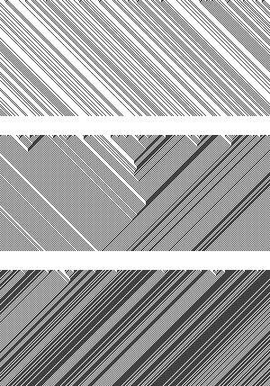

Week #183 shares its name with a few interesting characters. There is a Taiwanese boy band called Club 183 for a very strange reason. The sum height of all 5 members is 183 centimeters. The strangest part of naming your band after your heights is that if you ever need a replacement member, exact height is a strange job requirement. This week also shares its name with 183 Istria a large stoney main belt asteroid. It was discovered from an observatory in Pula, Croatia, which is on the Istrian peninsula and gave the asteroid its name. Week #184 has a namesake in the asteroid belt as well. 184 Dejopeja is an M-class asteroid. M for metal it is an iron-nickle mix and is moderately bright. M-class asteroids are the 3rd most common classification. Rule 184 is one of the many Cellular Automata rules, but this one is special. It is used in many traffic and particle simulations because the next row is directly dependent on the previous row and continues undisturbed.
In both weeks 183 and 184 it has been good weather here in Reykjavik, Iceland. It is a few days of much needed summer since we have lacked it the rest of the year.
These weeks have been spent prepping the slides for the dConstruct conference. We’ll be talking about living with the network. The title of the talk is “Humans Are Only a Self-driving Car’s Way of Making Another Self-driving Car”. The talk is written and we’ve been putting together the slide-deck. The last few steps are to practice, smooth out any rough edges and make sure it fits the time and topic. After the event, there will be audio and video so anyone who couldn’t attend can see the talk too.
In week 183 we had the last of our kickstarter LatLon Analog notebooks printed. It was the special green cover we are using for the Mars edition. This is going out free to every notebook Kickstarter backer for free. We printed 1000 copies and are immediately giving 470+ back to the backers. The rest will go to other friends, family and if there are any left, eventually on sale.
Bric-à-brac
As part of dConstruct next month, one of the speakers Tom Scott will be presenting some interesting things. I’ve had the luxury of meeting Tom a few times, albeit briefly at other events in the past. I highly recommend watching others in his YouTube Channel. This video is him working with a team to create a real-life third-person driving game.
Last set of weeknotes we talked about Comet 67P/Churyumov-Gerasimenko. This is the comet that the Rosetta satellite has caught up to and is now in orbit. That alone is an amazing feat, but now we are seeing more and more size comparisons for this comet.
Here it is compared to the size of London. Even after seeing this, I’m not sure to think of this is big or small? It certainly is pretty big compared to London, but in outer space, this is pretty small. Many of the Large Belt Asteroids we mention which share names with our weeks notes are larger than this.
Here it is again standing on end compared to LA. It was created by michel. Again, that is pretty big, but also small in comparison to the effort and exact calculation needed so that the Rosetta satellite would get into orbit.